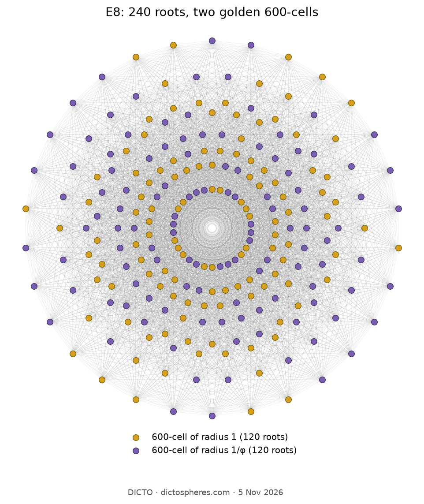

In eight dimensions the 240 roots of E8 fold down into two 600-cells, one the golden ratio times the other; the twist that swaps them is the golden twist of the whole book, and the eight rings of the E8 picture stand in the ratios of the eight particle masses of E8
Climb the ladder of this book: a golden bond in the plane, two golden cuts on every Platonic solid, golden pairs as slices of four-dimensional solids. At the top, in eight dimensions, stands one of the most symmetric arrangements of points known, the 240 roots of E8. Fold it down to four dimensions and it splits cleanly into two 600-cells, one the golden ratio times the other. The ladder ends where it began: on one golden step.
The 600-cell is the four-dimensional solid of 120 corners that the Alicia chapters walk through as the White Queen (#63). Written as quaternions, its 120 corners are the unit icosians: eight of the form (±1, 0, 0, 0), sixteen of the form ½(±1, ±1, ±1, ±1), and ninety-six even permutations of ½(±φ, ±1, ±1/φ, 0). Sums and products of icosians stay among the numbers a + b√5 with rational a and b, and Conway and Sloane read the size N(q) = a + b√5 of an icosian simply as a + b. With that reading the icosians become the E8 lattice.
Check. A unit icosian has N = 1, read as 1. One divided by φ has N = 1/φ² = (3 − √5)/2, read as 3/2 − 1/2 = 1: the same length. Multiplied by φ instead, N = φ² is read as 2, longer, so these are not roots. We built the 240 vectors in eight dimensions (the icosian and its golden conjugate side by side, weighted so that the reading a + b becomes ordinary length) and checked: all 240 have the same length; any two meet at 0°, 60°, 90°, 120° or 180°; each has exactly 56 neighbours at 60°; together they span all eight dimensions. These are the properties that single out the root system of E8. In four dimensions the two groups of 120 lie on spheres of radius 1 and 1/φ = 0.618034; in each, every point has 12 nearest neighbours at distance radius/φ, 720 edges in all: two 600-cells, in golden ratio.
Every number of this book has a golden twin: replace √5 by −√5, and φ = 1.618… becomes −1/φ = −0.618…. Applied to the icosians, the twist keeps the unit icosians on a sphere of radius 1 but turns the small 600-cell, of radius 1/φ, into a large one, of radius φ. The eight-dimensional root is the icosian and its twin side by side; looked at from the twin's side, the small 600-cell is the large one. This is the same golden twist that DICTO's Double Vision shows for his golden cycles (#33): two exact settings of one structure, swapped by φ ↔ −1/φ.
The best-known picture of E8 looks straight down its Coxeter plane, the plane in which its fundamental symmetry of order 30 is a rotation. The 240 roots fall on eight rings of 30 (Figure 1). Measured in this picture the ring radii stand in the ratios
1 : 1.618034 : 1.989044 : 2.404867 : 2.956295 : 3.218340 : 3.891157 : 4.783386,
which are, to five decimals, the eight particle masses that Zamolodchikov (1989) found for a chain of magnetic spins at its critical point, a theory with E8 symmetry; Koca and Koca (2012) note the equality of these masses with the ring radii. The second mass is φ times the first, and the ratio close to 1.6 was measured in the magnet cobalt niobate by Coldea and colleagues (2010). Four of the eight are golden pairs: m₂ = φ·m₁, m₆ = φ·m₃, m₇ = φ·m₄ and m₈ = φ·m₅. In each ring the roots of both 600-cells mix; the golden step lives in the radii.

| rung | what is golden | chapter |
|---|---|---|
| 2D | the truncated triangle and the golden bond | #20, #48 |
| 3D | every Platonic solid has exactly two golden cuts | #88 |
| 4D | the 120-cell and its polar, the 600-cell | #65 |
| 4D | all five golden pairs are slices of four-dimensional solids | #89 |
| 6D | golden on the octahedron, silver on the cube | #90 |
| 4D | solids whose every cell is a golden cut | #91 |
| 4D | the golden stations of the sweeps as limits of multiplets | Silence Is Golden |
| 8D | E8: two 600-cells in golden ratio, swapped by the golden twist | this chapter |
Chapter 1 began with one triangle of mirrors carrying one number, 1, √2 or φ. The φ triangle builds the icosahedron and dodecahedron; its four-dimensional cousin builds the 600-cell and 120-cell; and E8, the largest of the exceptional symmetries, holds two 600-cells in golden ratio. Read from the top, the whole ladder is the φ triangle climbing.
Known: the icosians and their reading as E8 (Conway and Sloane, ch. 8); the four-dimensional quasicrystal from E8 (Elser and Sloane 1987; Moody and Patera 1993); E8 grown from the icosahedron (Dechant 2016; Baez 2018); the E8 masses (Zamolodchikov 1989), their measurement (Coldea et al. 2010) and their equality with the ring radii (Koca and Koca 2012). This chapter: the reading of these as the top rung of the book's ladder and as its golden twist; every number above recomputed (study 2026-11-05-golden-ladder-e8).
Sources checked: the reference library (search “E8 icosians 600-cell golden ratio Elser Sloane Moody Patera Dechant”, 5 Nov 2026; the E8 works were then added to it); arXiv records of Dechant 2016, Baez 2018 and Koca–Koca 2012, read.
J. H. Conway, N. J. A. Sloane, Sphere Packings, Lattices and Groups, 3rd ed., Springer (1999), ch. 8 §2. V. Elser, N. J. A. Sloane, A highly symmetric four-dimensional quasicrystal, J. Phys. A 20 (1987) 6161–6168. R. V. Moody, J. Patera, Quasicrystals and icosians, J. Phys. A 26 (1993) 2829–2853. P.-P. Dechant, The birth of E8 out of the spinors of the icosahedron, Proc. R. Soc. A 472 (2016) 20150504, arXiv:1602.05985. J. C. Baez, From the icosahedron to E8, London Math. Soc. Newsletter 476 (2018), arXiv:1712.06436. A. B. Zamolodchikov, Integrals of motion and S-matrix of the (scaled) T = Tc Ising model with magnetic field, Int. J. Mod. Phys. A 4 (1989) 4235–4248. R. Coldea et al., Quantum criticality in an Ising chain: experimental evidence for emergent E8 symmetry, Science 327 (2010) 177–180. M. Koca, N. O. Koca, Radii of the E8 Gosset circles as the mass excitations in the Ising model, arXiv:1204.4567 (2012). DICTO, Double Vision, #33, DICTO DOI: 10.5281/zenodo.23407107. DICTO, The White Queen 600-cell, #63, DICTO DOI: 10.5281/zenodo.23690856. DICTO, The Red Queen 120-cell, #65, DICTO DOI: 10.5281/zenodo.23716140.